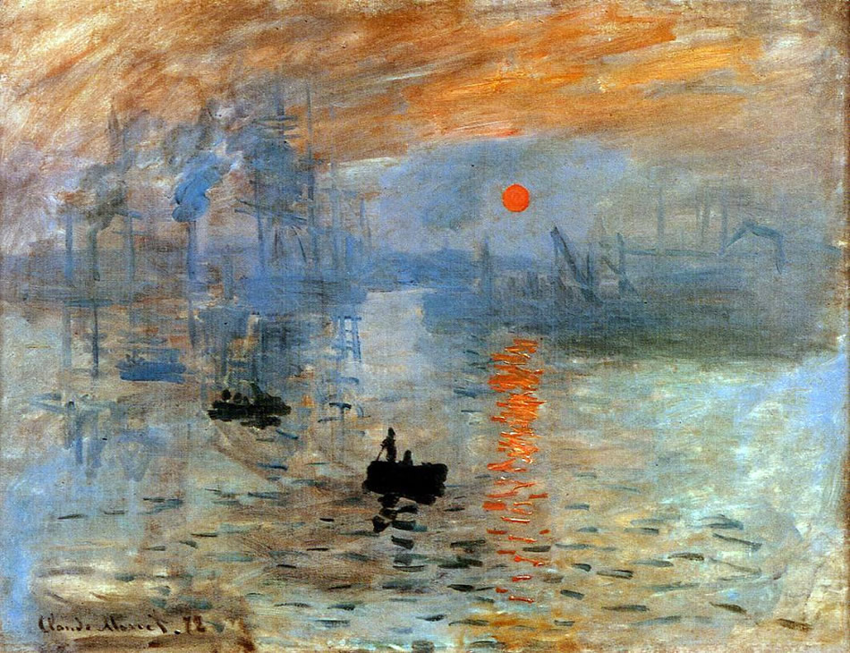

To fill the air
With the promise of hope
And the warmth of sunlight.
A fresh start, a clean slate,
The canvas of life awaits
Brushstrokes of courage,
Colors of dreams.
The past is behind,
A distant memory,
The future unfolds,
A blank page.
Embrace the dawn,
With open arms,
Step into the light,
For a new day begins.

"Impresión, sol naciente", Claude Monet (1873).
Holidays
Dear Hana,
I hope that you are having very nice days in Cuzco. Yesterday, we came back from our holidays and we are still a bit tired but I am happy to be able to write you again and let you know about some ideas for this new year. The weather is cold here and it is snowing, so it invites to relax and stay cozy at home, which we have done so far :) Nothing compared to what the nice days should be in Peru, I guess.
Even when we are a bit tired, I am very satisfied of the last days, since we could visit cities I consider very beautiful and important to see at least once in a lifetime. Especially for my father and brother who have not travelled too much before in the area and haven‚Äôt been in Europe very often: this is their second time, while my mother is now in her fifth time üòä.
We actually had very intense days, walking and visiting city highlighs in just few days. For example, we were in Rome just one day and we visited most of the popular places one must see. That means we really walk many thousands of steps in just day, for my parents this was maybe a bit too much because they are not used to have such activity, still, I am happy they are strong enough to bare such experience. Of course, seeing such important and historic city in one day gives you only a grasp of what actually is present in the city, and the perception of the art, culture and history may be limited and saturated. But I considered it good this way anyways and take the chance we had right know to make this visit: One never knows if the future will allow another chance. Better today than tomorrow, right?.

This is us in the great channel of Venice, view from Ponte Rialto.
Besides this, we could gather beautiful moments and anecdotes that for sure my family will remember always. It just makes me happy to know that. Besides these new experiences, I am also happy beucase I understood a bit better how we interact and behave as family and how we could spend good and bad moments as well due to all the time we could spend together. The key is to understand not everything is perfect and the satisfaction of more time being together doing something meaningful is highly rewarding.
Now that I am back at home, I start to think about the goals that this new year may bring. I thought about this during the holidays, and I came across some aspects in which I would like to focus. So, I would like to tell you a bit about this in this post.

We in front of the Colisseum in Rome.
Since I will work mostly remotely, I consider that my extra working activities should have high priority to adapt to this new working regime which I have not been exposed before. But I understand now that building communities is the most important aspect I should foster this year. This means that I would like to develop myself inside different fields, and interact with people from which I could learn and share the experiences of different activities. This idea is inside of me since a while and I have the feeling that I should go deeper on it in different aspects now that I have some open perspectives this year. Sharing them with you is very important because by doing that, it is already an extra motivation to achieve progress on each of them. And I feel closer to you if you know what is going on inside my mind and heart. These ideas are:
Dancing
I experienced this last year while I danced Salsa and Bachata for many months. In Elangen, I did several courses and went regularly in the party gatherings. There, somehow I recognized myself as part of the community and the most enjoyable moments of my time in the city were by dancing there and learning new figures and steps. Here I leave you an example of a figure we used to dance and that I particularly liked:
Summary figure at the end of the Salsa class (this year in Erlangen).
The time I spend dancing was so enjoyable that I don’t think I should limit this aspect during this year that starts. I felt and enjoyed so many things while dancing, that I believe this deserves an own entry in this blog. So, in the future I will describe you in more detail the feelings and experiences I enjoyed the most in another entry blog. For the moment, please enjoy this nice song we use to dance, specially in parties. It is not salsa but you can dance it without problems :) and I particularly like it because it talks about a very mexican symbol, the Virgin of Guadalupe.
"Madonna di Guadalupe", Eros Ramazzotti.
Music
Maybe I told you about this before, I was kind of a musician when younger. I did play the cornet, which is a similar instrument to the trumpet but without the ventiles for air. It was funny because in Mexico, it is common to have music bands to perform civic ceremonies that honour the flag etc. So the music played is more related to the military routines that honor the national symbols. The songs are more like melodies that serve to give orders during parades. I had this nice experience during the university, to gain some sports credits and this activity was included there. I was attracted to the discipline and rigid aspect of the order present in the band, the lines and the commands. The music itself has its own charm as well, but maybe it is not for all tastes. Here I leave you a video of a band that I used to follow and it is performing a special melody, similar to what I did as well in that time. Just remember, I was a cornet so I was always in the line behind the trumbs as seen in the video.
Banda de Guerra "Bomberos de Celaya".
Well, the idea is that knowing how to play the cornet, to learn to play the trumpet should not be that difficult. And here the big point: The bands of typical regional mexican music called "Mariahi" also needs trumpets to perform their songs. Here in Munich, there is one nice band that usually plays in the Mexican events, making the parties always happier with their rythm and typical mexican ambience. Since this year, I got the invitation of one guy working in the band to play with them :) which is also something I had in mind for very long time. Of course, I need to learn a decent repertoire of songs, lets say 5 or 10 for a beginning. But then I would be able to play with them, which could serve as a very funny hobby as musician. Can you imagine? We could play in the band in the many mexican parties here in Munich, or in different other events as weddings or other ceremonies. Being a Mariachi has always been a funny project for me and now it seems to be not so far away. Actually, I even have now a trumpet which I bought for a very fair price before leaving for holidays to Italy. So practice is what should come next :) Here you have some videos of various successful artists playing very famous Mexican songs with Mariachi:
"Amor Eterno", Rocío Durcal.
"Hasta que te conocí", Juan Gabriel.
"Como quién pierde una estrella", Alejandro Fernández.
Mente sana en cuerpo sano
Some physical activity is gonna be key in these time that is coming. After the stressful situations of moving out from an apartment and many days in holidays, I miss some routine of exercises and regular eating. Focusing on working out brought me good mood in Erlangen as well. I could not do it so regular as I wished, but now I have the possibility with some fitness studies that are here close to where I live now. Additionally, there are courses of Yoga that are included in the membership, so it makes sense if I try these as well. I have never had a deep approach in Yoga of course, but I do remember the nice "Lizard on a Rock" posture you thaught me, and I think there should be many different rewarding postures to enjoy as well. I like to link this project to the famous quote “Healthy mind in healthy body” which in spanish is "Mente sana en cuerpo sano". Maybe I could ask you a bit more about this in the future, Hana?.
Lizard on a rock.
Expressing inner feelings
I feel since long time that I have so much to express inside of me and I have struggled to find a good way to conduct these needs of expression using some form of art. Music is one of them of course, you know very well how much music means to me, but I also believe that other forms of expression like drawing or work with the hands and tools can be very fulfilling. I have not a very clear idea about it, but for example, I do like architecture and drawing sketches of building is one of the things I have in mind. I did a bit in my bachelor, but everything was digitally on computer and not really focused on expressing feelings or emotions trough arquitechture, it was more in a practical way. So drawing by hand some facades or perspectives of buildings could be a good project, don’t you think so?.
Sketch of the Duomo di Milano by Minty Sainsbury.
Produce something with my own hand and tools, could fit as well to my ideas. Particularly something like a goldsmith. I have something for jewelry lately, I feel attracted to learn the building process of different rings, necklaces or earrings and being able to create beautiful things with my hands and patience. This could even serve as a side business, right?. But of course, this is a faraway idea since to work on this one needs a working place, many tools and training on it. Maybe this year I will only scratch the surface of this possibility, but is always nice to dream on it :)
Briar rose three stone with marquise lab ruby and black diamonds by oorejewelry.
The most important
But I don’t want to make you believe only new things are on my head. The most important aspect is maybe my circle of friends that I have here in Munich. We have evolved and changed, but we are still here almost all of us and we continue meeting regularly and making the friendship to last. Working of keeping strong bounds and enjoying the special occasions with them is one of the main reasons why I decided to move back. Being so far away from home and family, I feel so lucky to have such nice group of friends and the possibility to live in the same city as them. Maybe it is a way in which I can feel a bit like home being far away from Mexico. You know already my very good friends and I hope you still remember them. But there are other good friends which have come in the last years and others have changed and evolved. I am anyways happy to work and building good experiences on these nice people.

This photo is very special since we all (almost) are present here (2018).
Hobbies
I also want to continue with the usual hobbies of reading and watching interesting movies. I did very few progress on these in the last year since I did not read many books or watched movies/went to the cinema. But I did read a couple of very good books that gave too much to think and make reflections about life: The Sttepenwolf and Oliver Twist are good examples of what I enjoyed the most these year. I can talk deeper of these and more books in a new post, if you like, since you may think this entry is already a bit too long, lol.
Finalmente
Te deseo entonces un sábado placentero y que todos tus pensamientos y planes para el siguiente año comiencen de la mejor manera. Tambien te deseo que lindas y buenas situaciones vengan a tu vida de una manera inesperada y traigan consigo mucha felicidad a tus dias.
Deseándote con profundo cariño lo mejor, me despido Hana pensándote mucho,
Leonardo.